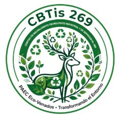

En la actualidad, el cuidado del medio ambiente y el manejo adecuado de los residuos sólidos son aspectos fundamentales para construir una sociedad más responsable y comprometida con el planeta. Las escuelas tienen un papel importante en esta tarea, ya que son espacios donde los estudiantes pueden aprender y poner en práctica hábitos que favorezcan el cuidado de la naturaleza. Por esta razón, el proyecto PAEC: Eco-Venados Transformando el Entorno busca fomentar la conciencia ambiental y promover la participación de la comunidad educativa en actividades relacionadas con el reciclaje, la limpieza y el aprovechamiento de los residuos. A través de este proyecto se pretende dar a conocer la importancia de separar correctamente la basura, reutilizar materiales y reducir la contaminación que afecta nuestro entorno. Asimismo, se busca aprovechar las herramientas tecnológicas para crear un sitio web que proporcione información útil sobre el reciclaje, sus beneficios y los diferentes tipos de residuos. De esta manera, se espera contribuir a la formación de estudiantes más conscientes, responsables y participativos, capaces de realizar pequeñas acciones que generen cambios positivos en su escuela y en el medio ambiente.
Fomentar la conciencia ambiental en la comunidad educativa mediante la investigación y difusión de información sobre el reciclaje y el manejo adecuado de los residuos sólidos, así como el diseño y desarrollo de un sitio web que permita informar a los usuarios sobre la importancia de cuidar el medio ambiente y promover prácticas responsables.